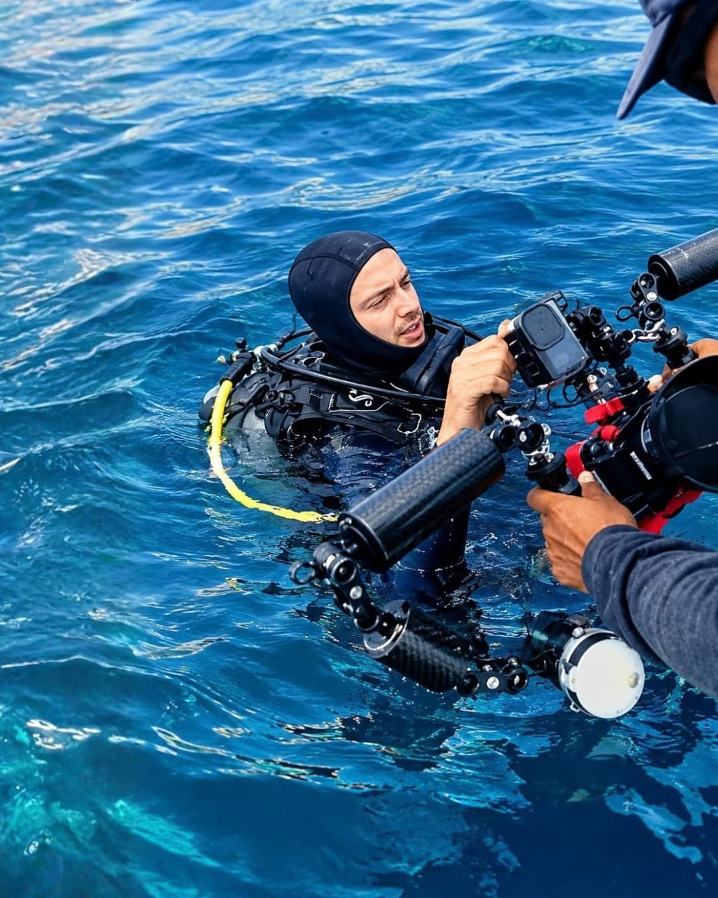

Clases de fotografía
Clases de fotografía en Puerto Escondido
Aprende fotografía con un fotógrafo profesional, sobre y bajo la superficie. Cada clase se adapta a ti: tu nivel, tu cámara y lo que quieres fotografiar, individual o con amigos. En español o inglés.

Clases de fotografía submarina
Para buzos y no buzos. Trae una GoPro, una carcasa para celular o tu propio equipo de cámara.
Curso de fotografía submarinaEspecialidad SSI Photo & Video
Para buzos certificados
- Cualquier cámara: GoPro, carcasa para celular o equipo completo
- Ajustes, luz y composición, aprendidos en inmersiones reales
- Revisión de tus fotos después de cada inmersión
- Certificación SSI Photo & Video
Clase de fotografía en snorkelBajo el agua, desde la superficie
Sin equipo de buceo
- Para quienes hacen snorkel, apnea o natación
- Vida del arrecife y fotos mitad dentro, mitad fuera del agua desde la superficie
- Con GoPro, carcasa para celular o tu propia cámara
- Trucos para fotos más nítidas, más azules y menos turbias
¿Todavía no estás certificado? Empieza con un bautizo de buceo o el curso SSI Open Water. Ver cursos de buceo →
Clases de fotografía clásica
En tierra, para todos los niveles: desde tu primera cámara hasta pulir un estilo que ya tienes.
Clase de fotografíaEn tierra
Todos los niveles
- Clases en privado o en grupo, en exteriores por Puerto Escondido
- Ajustes de cámara, luz y composición
- Retratos, paisajes y fotografía de calle
- Comentarios sobre tus fotos sobre la marcha
Clase de edición en LightroomAdobe Lightroom
Para fotos de tierra y submarinas
- Organiza, edita y exporta tus fotos en Lightroom
- Exposición, color y balance de blancos, incluido corregir fotos submarinas azules o verdes
- Un flujo de trabajo sencillo y presets que puedes seguir usando
- Practica con tus propias fotos
Cómo funciona
-
Escríbeme
Cuéntame por WhatsApp qué quieres aprender, tu nivel y tu cámara. Te respondo con horarios y precios.
-
Lo planeamos a tu medida
En privado o con amigos, en tierra, en el agua o frente a la pantalla para Lightroom, en el horario que te acomode.
-
Fotografía y revisión
Salimos a fotografiar y luego revisamos tus fotos juntos para que sepas exactamente qué probar la próxima vez.
¿Preguntas sobre una clase? Escríbeme por WhatsApp o mira mi trabajo submarino y en tierra.